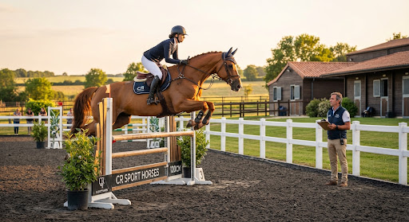
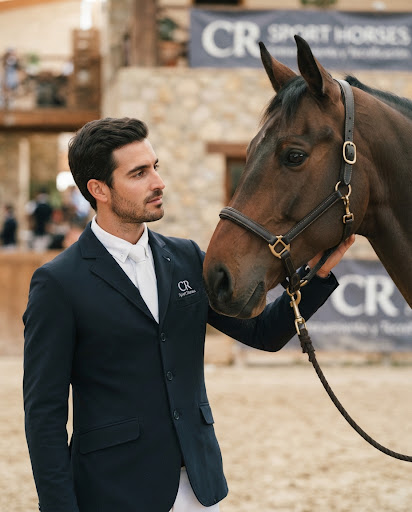
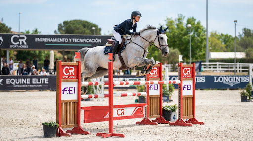
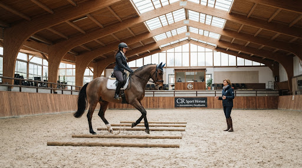
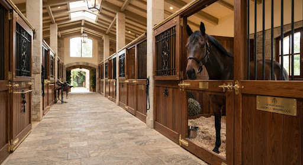

Entrenamiento y Tecnificación Deportiva
Desarrollo atlético individualizado y tecnificación técnica de salto de obstáculos bajo la supervisión directa del jinete profesional Roi Calviño Rabón. Enfoque riguroso en biomecánica, confianza en pista y progresión hacia niveles nacionales e internacionales (CSI).

Estructura Integral del Alto Rendimiento
Un ecosistema diseñado para maximizar el potencial deportivo del binomio sin comprometer la longevidad física ni mental del atleta equino.
Entrenamiento Integral del Caballo
Preparación física progresiva, acondicionamiento cardiovascular, puesta a punto para competición de 1.20m a Gran Premio, regularidad métrica de galope y respeto absoluto por las barras.
Tecnificación de Jinetes Amateur & Pro
Perfeccionamiento biomecánico de la posición, absorción del movimiento en suspensión, lectura precisa de distancias cortas y largas, y manejo templado de la presión psicológica en competición.
Acompañamiento en Competición
Planificación estratégica de circuitos nacionales e internacionales (Sunshine Tour, Casas Novas, Vilamoura, Copas RFHE), asistencia en pistas de ensayo y reconocimiento minucioso de recorridos.
Clínics y Masterclasses
Jornadas intensivas de fin de semana en nuestras instalaciones o centros hípicos asociados. Sesiones en grupos reducidos de máximo 4 binomios organizados estrictamente por nivel y objetivos.
La Metodología Técnica de Roi Calviño
Diagnóstico Biomecánico & Psicológico
Evaluación estática y dinámica de la anatomía del caballo, simetría muscular, rectitud en los tres aires y balance postural del jinete. Identificación de posibles puntos de tensión, bloqueos de boca o desequilibrios en el contacto.
Trabajo en Llano y Gimnasia de Salto
Consolidación de la sumisión y permeabilidad a las ayudas. Líneas de barras con distancias variables para enseñar al caballo a pensar, sentarse sobre sus posteriores y arquear la espalda con serenidad y agilidad.
Transferencia a Recorrido & Cronómetro
Simulación de situaciones de concurso real: combinaciones técnicas (dobles y triples), saltos de agua abierta, verticales con tabla delgada y recortes óptimos en barrage sin desestructurar la cadencia de galope.

“El buen salto es la consecuencia natural de un trabajo en el llano impecable, un ritmo constante y una complicidad total entre jinete y caballo.”
Programas Adaptados a sus Metas
Estructuras flexibles para caballos en régimen de pupilaje deportivo, binomios en tecnificación continua o participantes externos en clínics.
Caballo en Competición
Monta, desarrollo técnico y presentación del caballo en concursos nacionales e internacionales a cargo exclusivo de Roi Calviño.
Tecnificación de Binomio
Entrenamiento personalizado e intensivo para jinetes que buscan elevar su nivel en competición y clasificar para pruebas superiores.
Clínics de Alto Nivel
Formato intensivo de 2 días de inmersión para asimilar conceptos técnicos clave y corregir malos hábitos en pista.
Instalaciones Preparadas para la Exigencia Deportiva
Pistas de trabajo acondicionadas con arena de sílice y fibras textiles microperforadas que absorben el impacto articular, permitiendo sesiones continuadas de salto sin fatiga prematura de tendones.



Solicitud de Programa de Entrenamiento
Para garantizar una atención técnica individualizada de máxima calidad, el número de plazas para caballos en competición y binomios en tecnificación es estrictamente limitado.
Centro Técnico CR Sport Horses
Galicia / Madrid · España
Sesiones & Visitas Técnicas
Martes a Domingo, exclusivamente con cita previa acordada.
Atención Directa
+34 600 123 456 · info@crsportshorses.com
Cuestiones Técnicas Habituales
¿Es necesario trasladar permanentemente el caballo a sus instalaciones?
No necesariamente. Contamos con programas de estancia continuada en pupilaje deportivo (altamente recomendables para progresión rápida), pero también ofrecemos bonos de sesiones puntuales donde el jinete desplaza a su caballo para el entrenamiento, así como clínics de fin de semana.
¿Se aceptan caballos jóvenes que inician su preparación deportiva?
Sí. Uno de los puntos fuertes de Roi Calviño es el desbrave fino, la base en el llano y la introducción serena al salto con caballos de 4, 5 y 6 años, garantizando una cabeza despejada y una boca suave desde el inicio.
¿Cómo se planifica la asistencia técnica a concursos?
Al comienzo de cada trimestre elaboramos el calendario deportivo consensuado con el propietario. Roi Calviño y el equipo se desplazan al evento encargándose del reconocimiento de trazado, cálculo de trancos y calentamiento previo a cada salida.
¿Puedo solicitar un clínic privado para mi propio club hípico?
Sí, Roi Calviño imparte masterclasses y clínics monográficos en centros ecuestres de toda España y Portugal sujeto a disponibilidad de agenda. Póngase en contacto mediante el formulario indicando ubicación y número aproximado de binomios.